원장 소개
연결한의원 청주오창 원장진
세 원장이 요일별로 협진하며 365일 진료합니다. 원장마다 주요 진료 분야가 달라, 예약 시 증상에 맞는 원장을 안내해 드립니다.
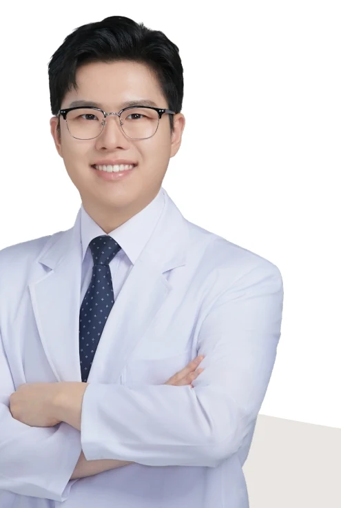
믿음과 신뢰를 주는
김현교대표원장
주요 진료: 두통, 목디스크, 역류성식도염, 어깨 통증, 다이어트, 체질한약
김현교 대표원장은 보건의료원·보건지소 한의과장과 여러 한의원 진료원장을 거치며 두통·목디스크·역류성식도염·어깨 통증 등 통증질환과 소화기 질환을 두루 진료해 왔습니다. 체질 진단을 바탕으로 한 다이어트와 체질한약을 주요 진료 분야로 두고, 증상뿐 아니라 식사·수면·생활 습관을 함께 살피는 진료를 지향합니다.
이력
- 前) 완도군 보건의료원 한의과장
- 前) 여수시 개도보건지소 한의과장
- 前) 경기광주시 도척보건지소 한의과장
- 前) 하슬라한의원 진료원장
- 前) 터한의원 분당점 진료원장
- 前) 연결한의원 파주운정 진료원장
- 現) 라파엘 클리닉 진료의
- 現) 소아청소년 보건의료 교육의원
- 現) 연결한의원 청주오창 대표원장
진료 시간 동그라미 표시가 있는 날은 진료가 있습니다
| 월 | 화 | 수 | 목 | 금 | 토 | 일 |
|---|---|---|---|---|---|---|
| ○ | ○ | ○ | ○ | ○ | ○ |
진료 요일은 사정에 따라 변경될 수 있으니 예약 시 확인해 주세요.

믿음과 신뢰를 주는
신재형진료원장
주요 진료: 교통사고 후유증, 소화불량, 요추협착증, 허리디스크
신재형 원장은 원광대학교 한의학과를 졸업하고 대한통증진단학회 정회원으로 CSHC·LPHC 통증진단 과정을 수료했습니다. 교통사고 후유증과 허리디스크·요추협착증 등 척추 질환, 소화불량을 주요 진료 분야로 두고 통증의 원인을 구분해 필요한 치료를 선택하는 진료를 지향합니다.
이력
- 원광대학교 한의학과 졸업
- 원광대학교 한방병원 임상과정 수료
- 대한통증진단학회 정회원
- 대한통증진단학회 CSHC과정 수료
- 대한통증진단학회 LPHC과정 수료
- University of Pennsylvania : Vital signs course 수료
- 前) 진안군 마령보건지소 지소장
- 現) 라파엘 클리닉 진료의
- 現) 연결한의원 청주오창 진료원장
진료 시간 동그라미 표시가 있는 날은 진료가 있습니다
| 월 | 화 | 수 | 목 | 금 | 토 | 일 |
|---|---|---|---|---|---|---|
| ○ | ○ | ○ | 16시까지 진료 | ○ |
진료 요일은 사정에 따라 변경될 수 있으니 예약 시 확인해 주세요.

믿음과 신뢰를 주는
이상현진료원장
주요 진료: 허리디스크, 교통사고 후유증, 골타추나, 체질한약
이상현 원장은 대전대학교 한의학과를 졸업하고 척추신경추나의학회 회원으로 허리디스크·교통사고 후유증과 골타추나를 주요 진료 분야로 두고 있습니다. 보건지소 한의과장과 장기요양등급판정위원 경력을 바탕으로 어르신 진료와 체질한약 상담도 함께 진행합니다.
이력
- 대전대학교 한의학과 졸업
- 대전대학교 한방병원 임상과정 수료
- 척추신경추나의학회 회원
- 前) 충주시 주덕보건지소 한의과장
- 前) 충주시 장기요양등급판정위원회 판정위원
- 前) 관저S한의원 진료원장
- 現) 라파엘 클리닉 진료의
- 現) 연결한의원 청주오창 진료원장
진료 시간 동그라미 표시가 있는 날은 진료가 있습니다
| 월 | 화 | 수 | 목 | 금 | 토 | 일 |
|---|---|---|---|---|---|---|
| ○ | ○ | ○ | 14시부터 진료 | ○ |
진료 요일은 사정에 따라 변경될 수 있으니 예약 시 확인해 주세요.
Clinic
모든 치료실이 1인실인 원내 공간
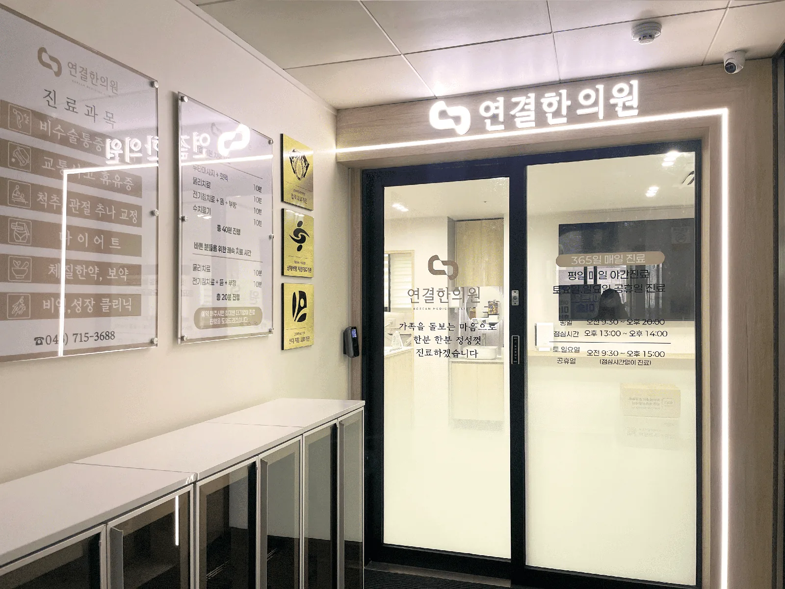
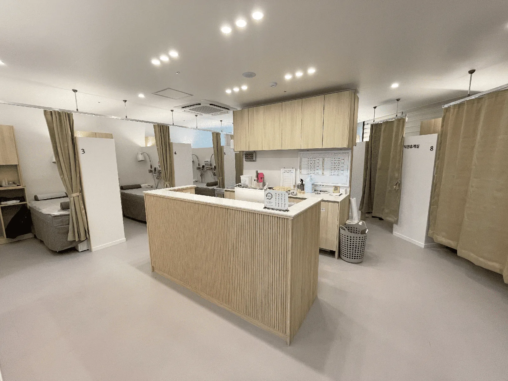
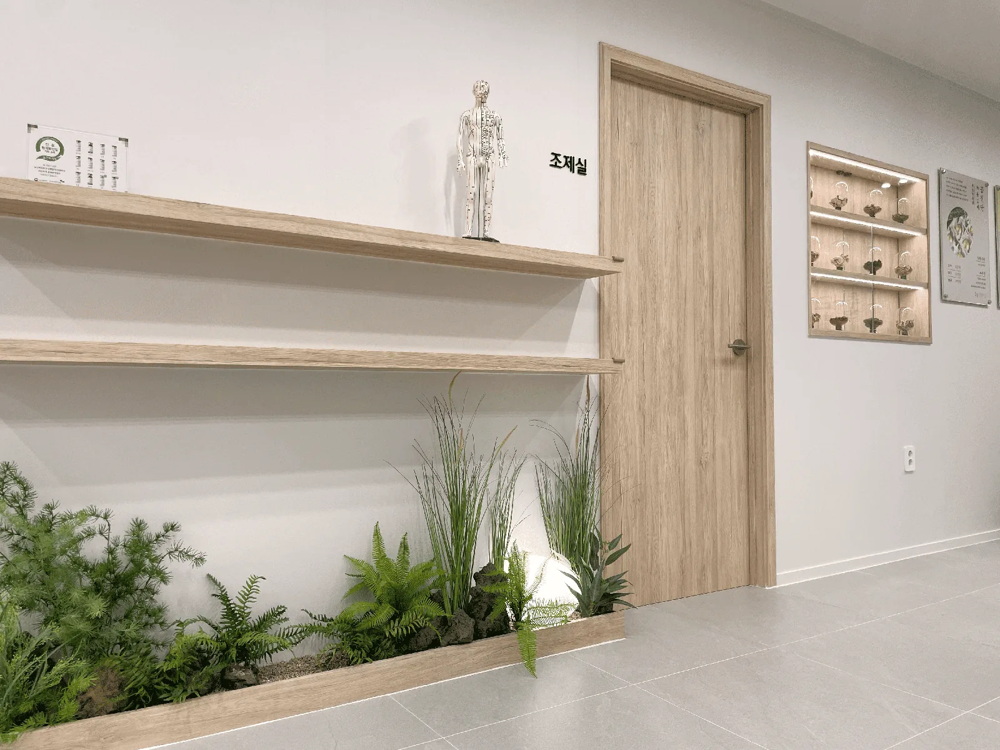
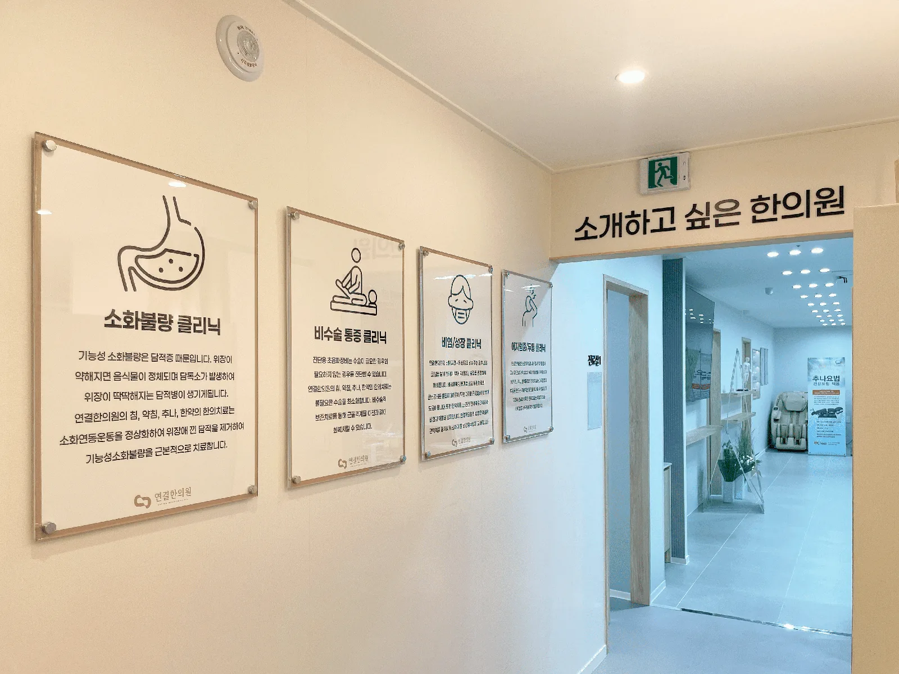
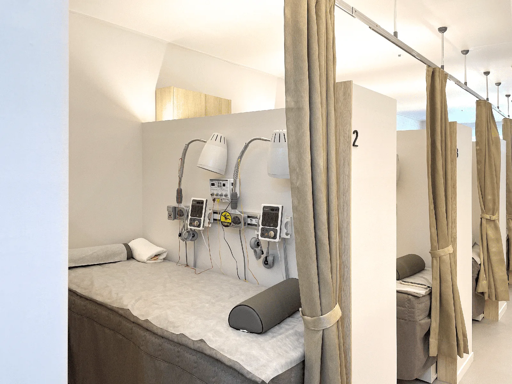
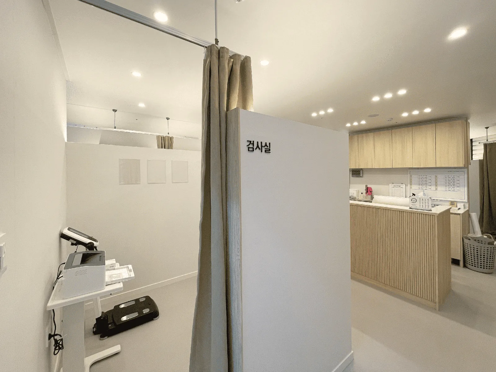
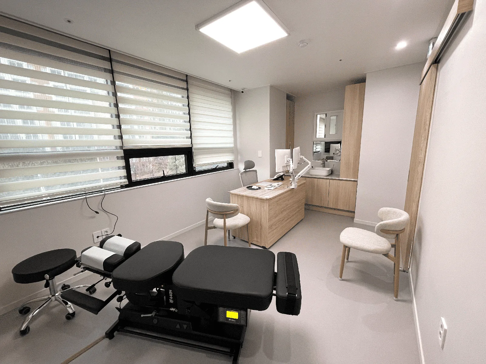
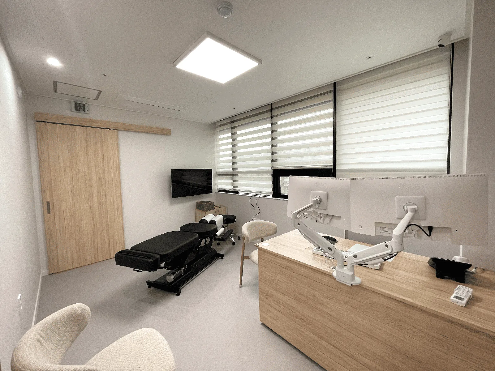
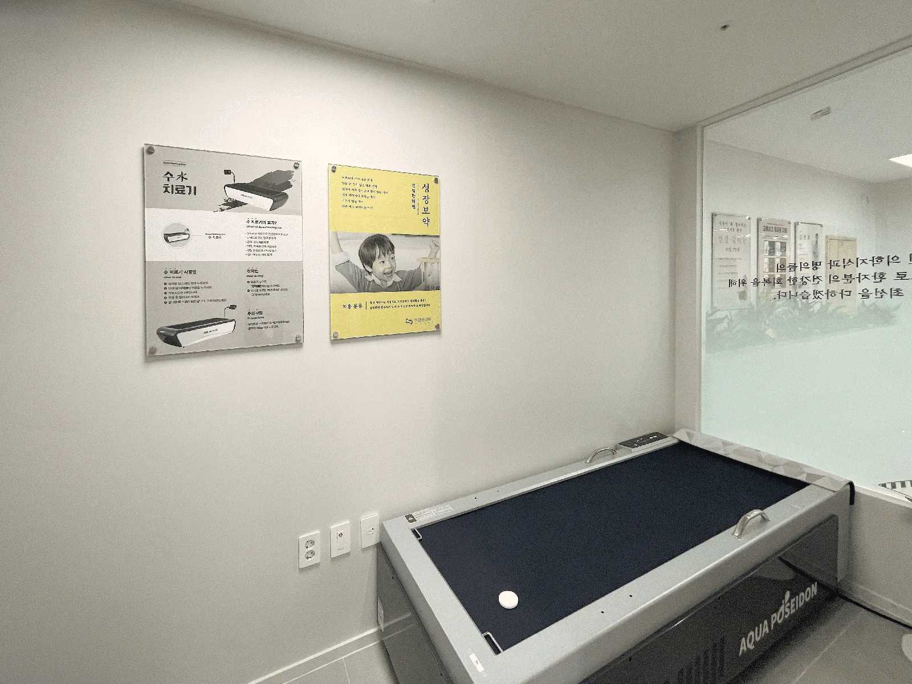
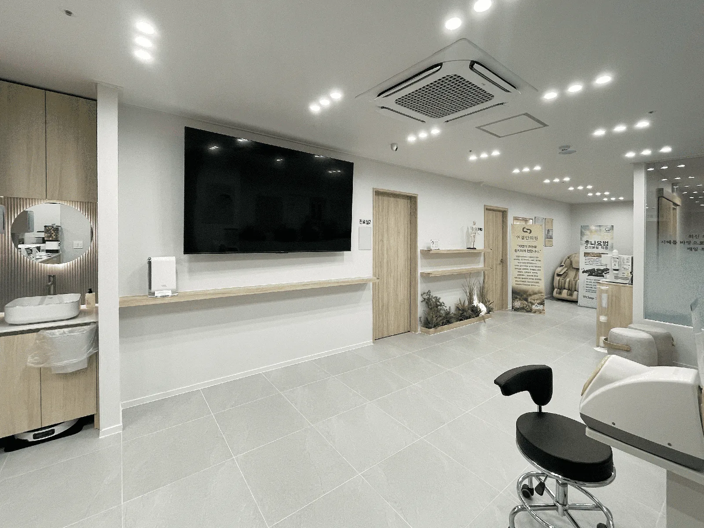
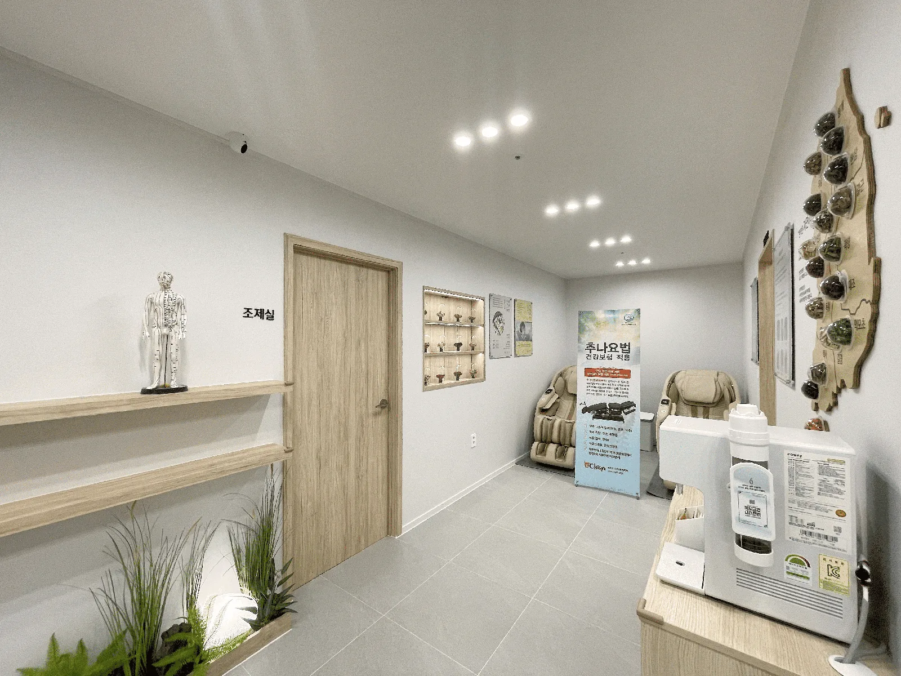
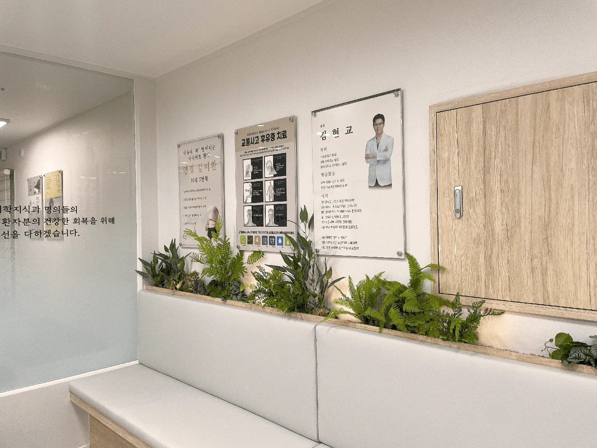
Our principles
한 번의 치료도 대충 하지 않는다는 원칙
침은 같은 이름의 치료라도 놓는 지점과 깊이, 강도에 따라 환자가 느끼는 반응이 달라질 수 있습니다. 연결한의원은 침이 처음인 아이에게도 부담이 적은 자극부터, 만성화된 상태에 필요한 자극까지 조절할 수 있어야 한다고 봅니다. ‘꼭 필요한 아픔’이 아니라면 통증을 줄이고, 왜 이 강도를 선택했는지와 치료 뒤 어떤 반응을 확인할지를 먼저 설명합니다.
병의 상태와 사람의 회복력을 함께 봅니다
같은 목디스크나 허리통증이라도 병의 깊이, 체격, 수면과 회복력, 이전 치료 반응은 서로 다릅니다. 가장 약한 치료나 가장 강한 치료를 일률적으로 적용하지 않고, 다음 내원에서 실제로 뻐근함이 얼마나 갔는지와 기능이 어떻게 달라졌는지를 확인해 치료점을 다시 보정합니다. 한약도 몸의 변화에 맞춰 15일마다 재상담한 뒤 다음 처방을 결정합니다.
몸의 안팎과 구조 사이의 연결을 찾습니다
아픈 부위만 ‘피해자’처럼 반복해 치료하지 않고, 그 부위에 부담을 만드는 주변 구조와 몸 안의 상태를 함께 살핍니다. 문진·맥진·복진과 필요한 신체 진찰을 종합해 치료할 지점과 방법을 고르고, 비슷한 치료관을 가진 원장들이 사례와 반응을 공유하며 판단을 계속 점검합니다.
원장들도 매일 직접 침·한약·추나를 받아봅니다
연결한의원 원장들은 서로에게 침을 맞고 한약을 복용하며 추나 치료를 받아봅니다. 환자가 어떤 자극을 어떻게 느끼는지 직접 확인하고, 어떤 치료를 어느 정도 강도로 했을 때 경과가 어떻게 달라지는지 더 세밀하게 확인하기 위해서입니다. 자극 위치가 조금만 달라져도 치료 효과가 달라진다는 점을 스스로 겪으며, 근육·인대·힘줄마다, 사람마다·연령마다 필요한 자극을 매일 연구합니다.
모든 치료실은 1인실입니다
침·약침·추나·상담이 이루어지는 모든 치료실을 1인실로 운영합니다. 다른 환자와 마주치지 않는 공간에서 증상과 치료 중 반응을 편하게 말씀해 주실 수 있습니다.
치료 강도·회복력·설명·사례 공유를 포함한 9가지 진료 원칙 보기 →
연결한의원 네트워크
연결한의원은 청주오창 외에도 아산탕정점, 파주운정점, 서초사당점까지 전국 네트워크로 운영되고 있습니다. 비슷한 치료관을 가진 원장들이 치료 사례와 반응을 정기적으로 공유합니다.